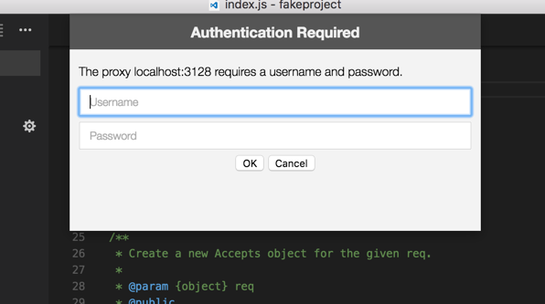

Network Connections in Visual Studio Code
Visual Studio Code is built on top of Electron and benefits from all the networking stack capabilities of Chromium. This also means that VS Code users get much of the networking support available in Google Chrome.
Common hostnames
A handful of features within VS Code require network communication to work, such as the auto-update mechanism, querying and installing extensions, and telemetry. For these features to work properly in a proxy environment, you must have the product correctly configured.
If you are behind a firewall which needs to whitelist domains used by VS Code, here's the list of hostnames you should allow communication to go through:
vscode-update.azurewebsites.netvscode.blob.core.windows.netmarketplace.visualstudio.com*.gallerycdn.vsassets.iorink.hockeyapp.net
Proxy server support
VS Code has exactly the same proxy server support as Google Chromium. Here's a snippet from Chromium's documentation:
"The Chromium network stack uses the system network settings so that users and administrators can control the network settings of all applications easily. The network settings include:
- proxy settings
- SSL/TLS settings
- certificate revocation check settings
- certificate and private key stores"
This means that your proxy settings should be picked up automatically.
Otherwise, you can use the following command line arguments to control your proxy settings:
# Disable proxy
--no-proxy-server
# Manual proxy address
--proxy-server=<scheme>=<uri>[:<port>][;...] | <uri>[:<port>] | "direct://"
# Manual PAC address
--proxy-pac-url=<pac-file-url>
# Disable proxy per host
--proxy-bypass-list=(<trailing_domain>|<ip-address>)[:<port>][;...]
Click here to know more about these command line arguments.
Authenticated proxies
Authenticated proxies should work seamlessly within VS Code with the addition of PR #22369.
The authentication methods supported are:
- Basic
- Digest
- NTLM
- Negotiate
When using VS Code behind an authenticated HTTP proxy, the following authentication popup should appear:

Note that SOCKS5 proxy authentication support isn't implemented yet; you can follow the issue in Chromium's issue tracker.
Click here to read more about HTTP proxy authentication within VS Code.
SSL Certificates
Often HTTPS proxies rewrite SSL certificates of the incoming requests. Chromium was designed to reject responses which are signed by certificates which it doesn't trust. If you hit any SSL trust issues, there are a few options available for you:
- Since Chromium simply uses the OS's certificate trust infrastructure, the preferred option is to add your proxy's certificate to your OS's trust chain. Click here to read more about the Root Certificate Policy in Chromium.
-
If your proxy runs in
localhost, you can always try the--allow-insecure-localhostcommand line flag. -
If all else fails, you can tell VS Code to ignore all
certificate errors using the
--ignore-certificate-errorscommand line flag. Warning: This is dangerous and not recommended, since it opens the door to security issues.
Legacy proxy server support
Extensions don't benefit yet from the same proxy support that VS Code supports. You can follow this issue's development in GitHub.
Similarly to extensions, a few other VS Code features don't
yet fully support proxy networking, namely the CLI interface.
The CLI interface is what you get when running
code --install-extension vscodevim.vim from a
command prompt or terminal. You can follow this issue's
development in
GitHub.
Due to both of these constraints, the http.proxy,
http.proxyStrictSSL and
http.proxyAuthorization variables are still part
of VS Code's settings, yet they are only respected in these
two scenarios.
Troubleshooting
Here are some helpful links that might help you troubleshoot networking issues in VS Code: